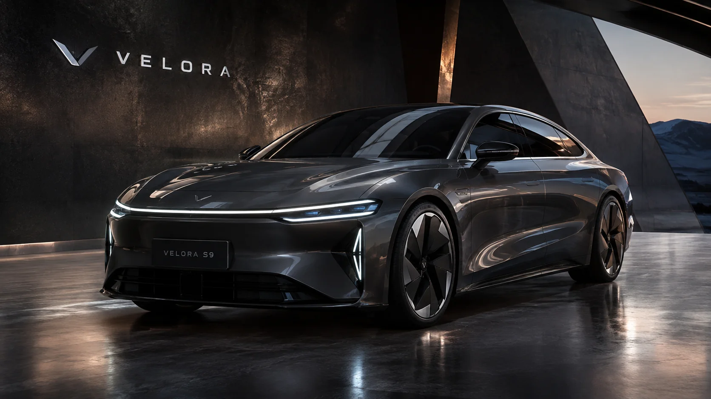
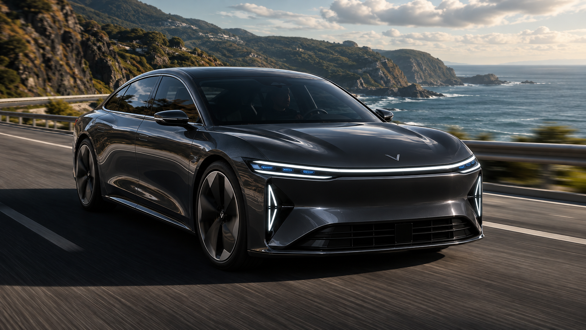
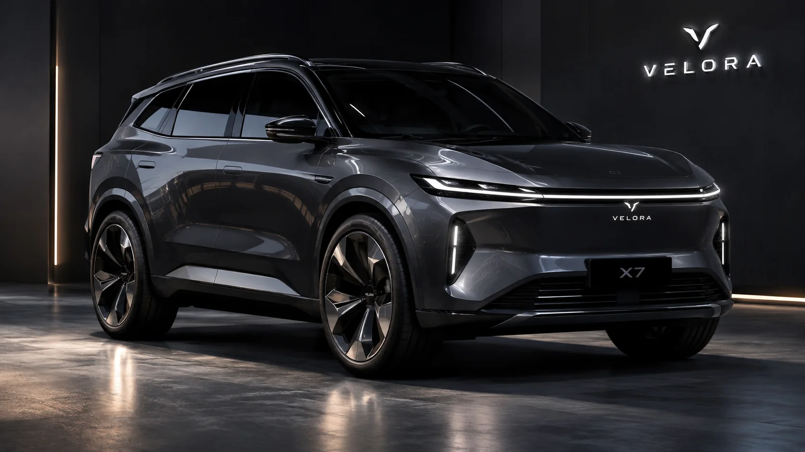
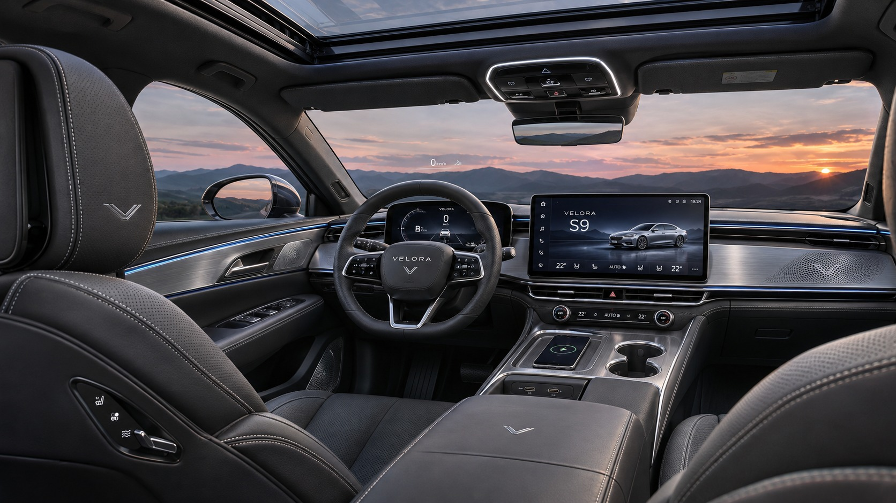

VELORA S9
Grand tourer elétrico

Uma nova visão de movimento. Dois conceitos elétricos, uma identidade criada para ir além do previsível.
Dois conceitos elétricos, cada um com sua própria leitura do design automotivo.

Grand tourer elétrico

SUV elétrico
Escolha um modelo para ver a dianteira, o perfil, a traseira e a cabine.
Um grand tourer de proporções baixas, superfícies esculturais e cabine focada na experiência.
IMAGENS CONCEITUAIS GERADAS POR IAResposta imediata, conforto envolvente e autonomia para prolongar a viagem.
Espaço para explorar, conforto para permanecer e força para seguir adiante.
Equipamentos e valores fictícios, criados para cada conceito. Autonomia e desempenho sem homologação.

Na VELORA, imaginamos veículos que unem linhas marcantes, tecnologia e a liberdade de explorar novos caminhos. Cada conceito é um convite a olhar para a mobilidade com curiosidade e descobrir o que ela pode vir a ser.
Um estudo criativo: veículos, imagens e especificações são fictícios.
EXPLORAR OS CONCEITOS